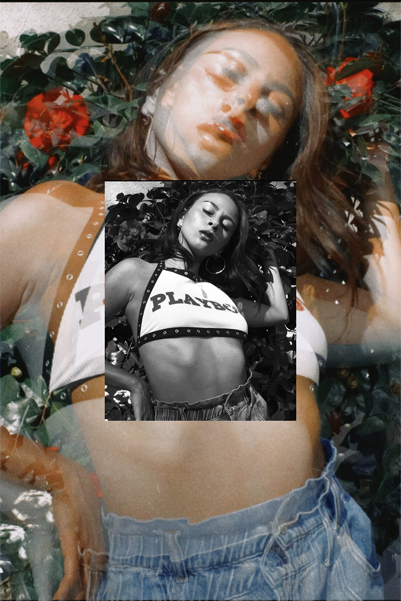

Listeners have described Virgo’s music on a spectrum of soothing and dreamy to powerful and hard-hitting, bringing about a true duality. Veering between jazzy, even slightly edgy neo-soul and hip-hop, Virgo’s signature style is a fusion of many influences. Just to name a few, inspiration from Jessie Reyez, K.Flay, Dreezy and Nai Palm can be heard

Virgo’s music revolves around embracing the authentic self and being upfront about the good, the bad and everything in between. Through this unfiltered honesty, Virgo brings listeners to a place not easily found in a world full of hiding.